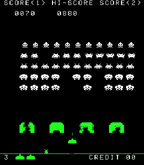
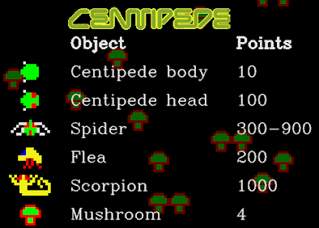

Education
Video Games and STEM Education
Adding Evolution to Video Games
The best way to explain the concept is to frame our video games in the context of the “ingredients” of evolution:
- Variation
- Inheritance
- Selection
- Time
When these components are present, it leads to Adaptation.
Variation
Think about the enemies in the old school video games that I used to play in arcades. Space Invaders, Asteroids, Centipede, Tempest, etc. What kinds of variation can you describe in these enemies? In Space Invaders, you had three types of aliens in each wave, plus the occasional bonus flying saucer. In Centipede and Tempest, you actually had categorically different enemy types that varied in how they looked and in their capabilities. Below you can see a few examples of what I mean:
 Enemy variation in Space Invaders includes the shape of each alien type (four types), but also their position in the armada (each type has its own row) and their speed of movement (which is adjusted based on how many remain in each wave). For now, we will ignore the flying saucer that passes across the top of the screen. The game increases in difficulty by having the movement speed of each wave increase. Ironically, the increased movement speed of the aliens within a wave as the population size was reduced was an unintended function of the increased frame rate achieved by having fewer aliens draw calls.
 Centipede includes enemy types with very different behaviors and abilities. The segmented centipede can split into component parts. Fleas drop vertically, leave a trail of mushrooms, and take two hits to destroy. Spiders move in a diagonal zig zag pattern. Scorpions move horizontally across the screen and turn mushrooms poisonous. Each wave the game difficulty increases by changing the behavior and segment number of the centipede.
While not as famous as Space Invaders or Centipede, Tempest was one of my favorite games in the early 80s. The player navigated their ship across various geometric shapes, shooting at different types of enemies with different capabilities. These included player capturing Flippers, lane electrifying Pulsars, and obstacle creating Spikers. So many quarters gone…
This variation is a big part of what makes video games exciting. The difficulty in video games is usually increased over time by introducing new variations of enemies, changing the enemies’ capabilities (like speed or fire rate) over time, or increasing the number of enemies. The problem (as we see it) is that these variations are introduced as part of a script that is programmed and balanced by the game developers. Beating the game means memorizing the script.
Inheritance
The addition of an inheritance model is the primary differentiator in our games that creates adaptation.
In most games, there is no relationship between enemies within a wave or between waves. They are instantiated (spawned) with developer defined traits at a specified rate, location, and time (or level or wave). This is the key difference in the games that our lab creates. In our games, the enemies traits are specified by digital genomes that they pass on to their offspring through a form of reproduction. If the enemy has a speed value of 4, that means that when it reproduces, its offspring inherit that speed value of 4. Most of the games we work on specify about 40 to 80 “genes” in the enemy genome, each of which can influence one or more game traits such as speed, fire rate, morphology, behavior, health, armor, resistances, etc.
Selection
Selection occurs when there is a correlation between a trait (say… hit points or movement behavior) and Fitness. In biological populations, Fitness is usually defined in terms of the number of offspring produced by a given individual. We often measure proxies for fitness in empirical biology that are typically predictive of (or at least correlated with ) Fitness, such as seed set in plants, survivorship, or number of eggs. In our games, we can make explicit linkages between performance and fitness using Fitness Functions.
For example, in Darwin’s Demons the enemies accrue Aggression by moving downward on the screen. The closer they get to the bottom, the higher their Aggression score. if they move past the player and off the bottom of the screen, their Aggression score gets an even larger boost. After each wave, the enemies with the highest Aggression score also have the highest probability of mating and producing offspring. Thus, we have created an explicit link in which Aggression is correlated with Fitness (number of offspring). Our games often have more than one of these Fitness Functions. For example, the Protean Swarm in Darwin’s Demons can also increase their mating chance with Accuracy (which measures how often they shoot at the player and how close they came to hitting the player) and Lifetime (which measures how long they last on the screen) .
If we turn off the fitness functions, then after each wave the enemies undergo random mating. Adaptive evolution does not occur, but the enemy traits might still evolve randomly because of Random Genetic Drift.
Time
The concept of time in video games is often defined in terms of waves or levels. Both of these terms imply a progression toward the game’s goal, along with a corresponding increase in difficulty. In our games, we usually specify time in terms of generations. A wave of enemies begin the game, the player defeats them, and then the next wave is created with Inheritance using a mating function specified as described above. As the generations (waves) proceed, the enemies with traits that are best able to optimize the fitness functions have more offspring, and the population adapts to the game play conditions. Most of these conditions are created by player choices and playstyle, and thus the enemies adapt to the player. Difficulty increases organically and repeated gameplay often creates novel adaptive solutions to the same play style.
Educational Outcomes
We reasoned that playing these types of games might have implications for STEM education. The success of the player is based on her comprehension and application of principles of evolutionary biology. The parallels to real world examples are numerous, and include the rapid evolution of antibiotic resistance in microbial pathogens, adaptation of crop pests to chemical and biological control measures, and behavioral adaptation to captivity in domesticated animals.
Adding biological evolution to video games makes the games better for the game player and facilitates player comprehension of complex concepts that are hard to teach.
Get Involved
If you are interested in joining the lab and working in the studio, reach out to me by email.